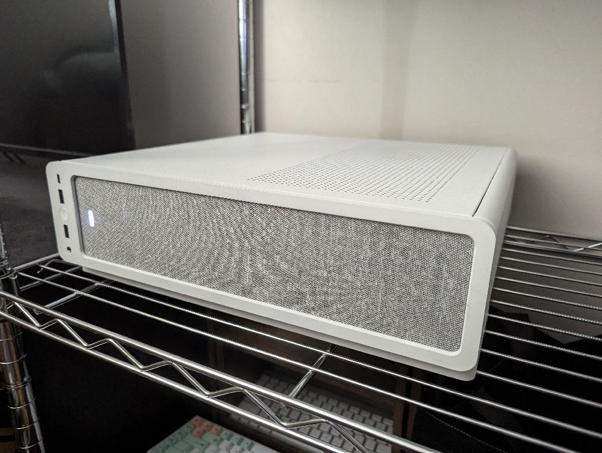

For development, I have a lot of tools that I like to use that make it easier for me to work on projects.
Coding
I like to use JetBrains IDEs for developing. CLion, WebStorm, and GoLand are the ones I use most often.
I currently run Windows on my computer, so I prefer to use Windows + WSL to build programs.
I'm comfortable using Linux, but it's not what I daily drive.
Despite its popularity, I don't really like VSCode - I find the JetBrains IDEs have a lot of quality
of life features I miss in VSCode. However, remote development is far better in cases where I need to
work on code directly on a remote server and not a local environment.
Environments
My main environment is my laptop, which is running Windows. I do most of my development here.
However, I have two virtual machines that I remote into for a development environment I can reach anywhere.
One runs Windows 11 and the other runs Fedora Linux, and both are equipped with my necessary development tools.
These virtual machines are hosted on a computer I built to use as a server. It's located in my apartment.
The server also hosts a container with databases that I use as a development database server.

My server
Services
For version control, I generally use GitHub. Sometimes I use the MSU-hosted GitLab for certain projects.
For website domains and hosting, I like to use Cloudflare.
I also use Cloudflare to expose some self-hosted web apps to the internet so I can access them from anywhere.
An example is CyberChef, which is a web app that has lots of general tools for development such as hashing,
random generators, format encoding/decoding, and more.
Every Sunday, I decide on a recipe to make for my weekly meal prep. Then, I walk to the store to buy the ingredients.
I wait until later to start cooking, usually around 6:00-7:00.
In the meantime, I either work on homework, play guitar, or play video games.
On Monday, I get up around 8:30 to get ready for my first class at 10:20.
After that class, I return to my apartment for 15 or so minutes to eat lunch.
Then, I pack a meal and drop it off at work and go to the STEM building for my next class.
After that second class, I go to work from 2:00-9:00. When I get home, I do a light workout for about an hour.
Garfield on Monday morning
On Tuesday, I get up early again and get ready for the 40-minute walk to my class in the Veterinary Medical center.
After that class, I have about three hours of time that I can use to work on homework, which I usually go to a computer lab to do.
Then, I have my Plant Biology lab class from 3:00-5:50. Right after that, I have my Web Design and Development class from 6:00-7:50.
After that class, I return home and do another light workout.
My Wednesday schedule is entirely the same as my Monday schedule.
On Thursday, I have the same morning walk, first class, and three hours of free time.
I'm scheduled to work from 3:00-9:00, but I come in early if I don't need to use the free time to get work done.
Fridays are mostly free for me. I am scheduled to work 11:00-5:00, but afterwards I have no classes so I spend the time relaxing.
Saturdays are entirely free, so I try to get work done and relax.